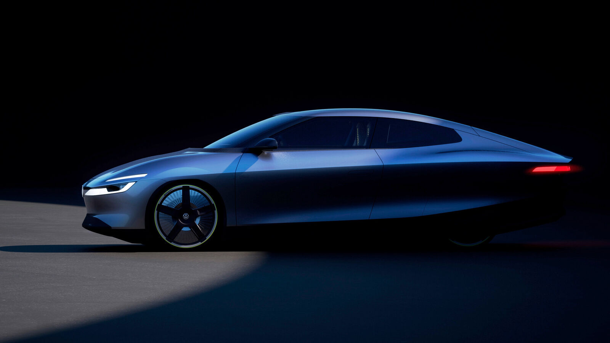

for DC Advanced UX Team.Vivi · Yohan · Libby · Lim Jisu · Katey · Anna
Back Issue

Cockpit
VW Mission Efficiency: no screen, bring your phone
Volkswagen has revealed Mission Efficiency, the XL1 successor teased on Monday, after driving it 1,278 km from Wolfsburg to Vienna on one 54.9 kWh charge at 6.89 kWh/100 km. The 4,775 mm 2+2 coupé has a Cd of 0.158, enclosed rear wheels and a full-width rear light strip with a lit logo. The HMI story: there is no central display. A phone or tablet clips to a mechanical rail and pairs wirelessly, a small e-paper panel shows climate, a portable Bluetooth speaker replaces the audio system, and the headrests are 3D-printed TPU lattices.
폭스바겐이 월요일 예고한 XL1의 전기 후계작 Mission Efficiency를 공개했다. 54.9 kWh 한 번 충전으로 볼프스부르크에서 빈까지 1,278 km를 6.89 kWh/100 km로 달렸다. 전장 4,775 mm 2+2 쿠페의 Cd는 0.158, 뒷바퀴는 덮였고 뒤에는 발광 로고가 박힌 전폭 라이트 스트립이다. 핵심은 센터 디스플레이가 없다는 것. 폰이나 태블릿을 기계식 레일에 끼워 무선 연결하고, 작은 전자종이가 공조를 보여주며, 휴대용 블루투스 스피커가 오디오를 대신한다. 헤드레스트는 3D 프린팅 TPU 격자다.
GM has shown a new interface for the 2027 Silverado and Sierra 1500 in which Apple CarPlay and Android Auto run in a floating window over GM's own UI, so climate, volume, range and the trailering panel stay on screen while the phone is projected. GM calls it 'a single scalable foundation across electric, gas and diesel-powered vehicles', which Electrek reads as a hint that projection could return to the EVs that dropped it in 2023; GM says it has no product plans to share. The phone gets a window, the car keeps the frame.
GM이 2027 실버라도·시에라 1500용 새 인터페이스를 공개했다. 애플 카플레이와 안드로이드 오토가 GM 자체 UI 위 플로팅 창에서 돌아가, 폰을 투사하는 동안에도 공조·볼륨·주행거리와 트레일러링 패널이 화면에 남는다. GM은 '전기·가솔린·디젤을 아우르는 하나의 확장형 기반'이라 설명했고, Electrek은 2023년 EV에서 뺀 폰 프로젝션이 돌아올 신호로 읽는다. GM은 밝힐 계획이 없다고 했다. 폰에는 창을, 차에는 틀을 남기는 절충이다.
It's Nice That's Paul Moore traces 25 years of Wikipedia's look, from Bjørn Smestad's 2000 puzzle ball with Japanese, Armenian, Cherokee and Klingon glyphs to the 2026 Baby Globe mascot sketched by community member Jonathan Ferreira and animated with Sharon Park. Wikipede, a moustached centipede of books, went from unused sketch to merchandise after an April Fools joke. The Vector 2022 redesign drew 90,000 words of debate and was kept 'barely noticeable' on purpose; UX designer Justin Scherer's line is that consistency builds trust.
It's Nice That의 폴 무어가 위키백과 25년의 시각 역사를 짚었다. 비외른 스메스타드가 2000년 그린 일본어·아르메니아어·체로키어·클링온 글자의 퍼즐 구체부터, 커뮤니티 회원 조너선 페레이라가 스케치하고 샤론 박이 움직인 2026년 베이비 글로브 마스코트까지. 책으로 만든 콧수염 지네 Wikipede는 만우절 농담 뒤 굿즈가 됐다. Vector 2022 개편은 9만 단어의 논쟁을 거쳐 일부러 '거의 티 나지 않게' 남겼다. 일관성이 신뢰를 만든다.
Canva launched ProSuite on September 15, bundling Affinity for design, photo and layout, Cavalry for motion, Flourish for data visualisation and Leonardo for AI image generation, with more than 100 new features. Affinity finally gets a Blend tool with bias, easing and curve controls, a simpler mask tool, 3D model support, INDD import, in-app scripting and a Claude connector; Cavalry scenes can have text and colours edited inside Canva while the animation stays locked. Affinity and Cavalry stay free; premium features sit behind the subscription.
캔바가 9월 15일 ProSuite를 출시했다. 디자인·사진·레이아웃의 Affinity, 모션의 Cavalry, 데이터 시각화의 Flourish, AI 이미지 생성의 Leonardo를 묶고 100개 넘는 기능을 더했다. Affinity에는 바이어스·이징·커브 제어가 있는 블렌드 도구, 단순해진 마스크, 3D 모델 지원, INDD 불러오기, 앱 내 스크립팅, Claude 커넥터가 들어갔다. Cavalry 장면은 애니메이션을 잠근 채 캔바 안에서 글자와 색을 바꿀 수 있다. 두 앱은 계속 무료다.
A Dubai client commissioned this one-off Phantom Extended as a tribute to his wife, and it is the first Rolls-Royce to use abalone shell: its iridescent blues and greens stand in for hummingbird feathers. Each hummingbird is 53 pieces of abalone and mother-of-pearl, the botanical scene 84, inlaid into the picnic tables and the Waterfall between the rear seats after nine months, six iterations and 45 hours of marquetry. Creme Light leather with Moccasin and Tan inserts, Seashell carpet, Ash Burr with Silver Birch; outside, Wildberry over White Sands.
두바이의 고객이 아내에게 바치는 원오프 팬텀 익스텐디드를 주문했다. 전복 껍데기를 쓴 첫 롤스로이스로, 그 청록 무지갯빛이 벌새 깃털을 대신한다. 벌새 한 마리는 전복과 자개 53조각, 식물 장면은 84조각으로 피크닉 테이블과 뒷좌석 사이 워터폴 패널에 상감됐다. 개발 9개월, 여섯 번의 수정, 상감 45시간. 크렘 라이트 가죽에 모카신·탄 인서트, 시셸 카펫, 애시 버 목재와 실버 버치. 외장은 와일드베리와 화이트 샌즈 투톤에 손으로 그린 벌새 코치라인이다.
Segway's MUXI Pro cargo e-bike pairs a 750 W direct-drive rear hub with 80 Nm, a 716 Wh battery rated at up to 117 km and a 9-speed electronic drivetrain that shifts automatically; regen braking, hill-descent control, hill-start assist and traction control come from the motor side. The step-through frame on 20 x 3-inch tyres carries 190 kg, an optional passenger kit takes 54 kg, turn signals are built in. The cockpit is a colour TFT with navigation, plus Apple Find My, GPS, proximity AirLock and OTA updates via the app. $1,999.99, US from September 22.
Dongfeng's Voyah Dream 9 flagship MPV launches September 22 at 429,900–529,900 yuan, with 30,000 refundable orders in 48 hours. It is 5,325 mm long on a 3,200 mm wheelbase and runs Huawei's HarmonySpace 6 cockpit; the second row has zero-gravity seats with mechanical massage that rotate to face the third row, a fridge, fold-away screens and tray tables, and the third-row glass dims on demand. Huawei Qiankun ADS 5.0 reads 37 sensors including an 896-line lidar. The 120 kWh BEV goes 701 km CLTC, the 1.5T PHEV 300 km electric, both on 800 V.
둥펑 보야 드림 9 플래그십 MPV가 9월 22일 출시된다. 42만 9,900~52만 9,900위안, 48시간 만에 환불 가능 주문 3만 건. 전장 5,325 mm, 휠베이스 3,200 mm에 화웨이 HarmonySpace 6 콕핏을 얹었다. 2열은 기계식 마사지가 있는 제로 그래비티 시트가 돌아 3열과 마주 보고, 냉장고·접이식 화면·트레이 테이블이 있으며 3열 유리는 밝기가 조절된다. 화웨이 첸쿤 ADS 5.0이 896라인 라이다 등 37개 센서를 읽는다. 120 kWh BEV는 CLTC 701 km.
Car Design News' Freddie Holmes reads the trends at IAA Transportation in Hanover: electric trucks with passenger-car faces, sharp DRLs and signature light bars (MAN eTGX, Volvo FH Aero Electric, Tesla's European Semi with camera mirrors), and cabs designed as living quarters. Scania's CR20 uses 100% recycled curtains and adjustable ambient light, DAF sells a 90 cm bed with lit storage, MAN adds a footwell panel for visibility. Inside: low, wide instrument panels with digital clusters and one central touchscreen, no centre console, stony neutral CMF.
Car Design News的Freddie Holmes总结汉诺威IAA商用车展趋势：电动卡车长出乘用车的脸，锐利日行灯与标志性灯带（MAN eTGX、沃尔沃FH Aero Electric、带摄像头后视镜的欧规特斯拉Semi），驾驶室则按居住空间设计。斯堪尼亚CR20用100%再生窗帘和可调氛围灯，DAF提供90 cm宽床与照明储物，MAN加了脚坑透视板。座舱普遍是低而宽的仪表台、数字仪表加单块中央触屏，取消中央通道，CMF偏石灰中性色。
Car Design News의 프레디 홈스가 하노버 IAA 상용차쇼의 흐름을 정리했다. 전기 트럭이 승용차의 얼굴을 얻었다. 날카로운 DRL과 시그니처 라이트바(MAN eTGX, 볼보 FH 에어로 일렉트릭, 카메라 미러의 유럽형 테슬라 세미), 그리고 거주 공간으로 설계된 캡. 스카니아 CR20은 100% 재생 커튼과 조절식 앰비언트 조명, DAF는 폭 90 cm 침대와 조명 수납, MAN은 시야용 풋웰 패널을 더했다. 실내는 낮고 넓은 대시에 디지털 클러스터와 중앙 터치스크린 하나, 센터 콘솔 없음, 돌빛 중립 CMF가 공통이다.
Cairo studio Ntsal's identity for the 18th Panorama of the European Film treats time as something that can be compressed and expanded: kaleidoscopic patterns that read as squeezed and stretched timelines, generated from two simple actions, so posters, print and an interactive schedule checklist all come from one system. The headline face, NT Panorama Naskh, is drawn from Arabic newspaper calligraphy and vintage poster credits; design director Nardine Shenouda wanted the 'rawness that can only be captured through manual labour'.
카이로 스튜디오 Ntsal이 제18회 파노라마 오브 더 유러피언 필름의 아이덴티티에서 시간을 압축하고 늘일 수 있는 것으로 다뤘다. 눌리고 늘어난 타임라인처럼 읽히는 만화경 패턴이 두 가지 단순한 동작에서 생성되고, 포스터·인쇄물·인터랙티브 상영 체크리스트가 한 시스템에서 나온다. 헤드라인 서체 NT Panorama Naskh는 아랍어 신문 서예와 옛 포스터 크레딧에서 왔다. 디자인 디렉터 나르딘 셰누다는 '손노동으로만 잡히는 거친 맛'을 원했다.
Antwerp agency WeWantMore has redrawn Belgian sparkling water BRU, whose Stoumont source dates to the 17th century, around one decision: the bottle is judged on a restaurant table, not in a supermarket aisle. Deep navy labels and blue screw caps on clear glass, the leaping stag emblem simplified into a sculptural silhouette, colourful decorative lettering framed by disciplined white space, and the line 'Some things just belong on the table'. Creative Boom's takeaway: not every product is fighting for a shopper's glance, so design for where it is seen.
안트베르펜 에이전시 WeWantMore가 17세기 스투몽 샘물에서 시작된 벨기에 탄산수 BRU를 하나의 판단 위에 다시 그렸다. 이 병은 마트 진열대가 아니라 레스토랑 테이블에서 평가된다. 투명 유리병에 짙은 네이비 라벨과 파란 스크루 캡, 도약하는 사슴 엠블럼은 조각적 실루엣으로 단순화했고, 다채로운 장식 레터링을 절제된 여백이 감싼다. 슬로건은 '어떤 것은 그저 테이블 위에 있어야 한다'. 실제로 보이는 자리를 위해 설계하라는 교훈이다.
PRINT's Type Tuesday, by Deb Aldrich, looks at Graphics, a bold display typeface from Typeverything released last season that channels 1970s disco posters and the first wave of digital lettering. The construction is monolinear and modular, with chunky, tightly packed forms punctuated by pockets of negative space, so a headline reads as a single block from a distance and as geometric parts up close. Aldrich pitches it for posters, book covers, logos and headlines: the era 'when the future looked groovy, graphic and full of possibility', drawn crisply.
PRINT의 Type Tuesday(데브 올드리치)가 Typeverything이 지난 시즌 낸 볼드 디스플레이 서체 Graphics를 다뤘다. 1970년대 디스코 포스터와 초기 디지털 레터링을 잇는다. 구조는 모노라인에 모듈형이고, 두툼하고 빽빽한 글자꼴 사이에 네거티브 스페이스가 박혀 멀리서는 한 덩어리 헤드라인, 가까이서는 기하학적 부품으로 읽힌다. 포스터·책 표지·로고·헤드라인용으로, '미래가 그루비하고 가능성으로 가득해 보이던' 시대를 오늘의 선명함으로 그렸다.
Los Angeles artist Hunter Harvey has moved from colourful figurative characters to text paintings in which the typeface carries the meaning. Short, unresolved phrases from signage, TV, parties and overheard talk are set in faithfully recreated Helvetica, Impact, old Microsoft slideshow fonts and anti-piracy meme lettering, then painted in matte vinyl flashe with airbrush and masking so they read like bumper stickers and billboards. Helvetica is 'trusted, authoritative', Impact 'bold, unapologetic and harder to take seriously'; joke or statement stays deliberately unclear.
로스앤젤레스 작가 헌터 하비가 알록달록한 인물화에서 서체가 의미를 짊어지는 '텍스트 페인팅'으로 옮겨 갔다. 간판, TV, 파티, 엿들은 대화에서 주운 짧고 미완의 문구를 충실히 재현한 Helvetica, Impact, 옛 마이크로소프트 슬라이드 폰트, 불법복제 경고 밈 글자로 짜고, 무광 비닐 플라쉐 물감에 에어브러시와 마스킹으로 그려 범퍼 스티커나 옥외광고처럼 읽히게 한다. Helvetica는 '믿음직하고 권위 있게', Impact는 '대담하고 뻔뻔해 진지하게 받기 어렵게'. 농담인지 선언인지는 일부러 흐려 둔다.
Not a Passenger: car seats and cassettes at KaDeWe
Berlin's YONT Studio has built 'Not a Passenger', a 35 m² analog listening room inside KaDeWe for Namilia's Passenger collection with Telekom Electronic Beats and Wet Leg, open September 15–27. Six upcycled car seats sit in a radial circle around four styrofoam monoliths coated in epoxy and high-gloss pink car paint: two hold cassette players and headphones, one is a full-length mirror and changing room, one a shelf for the perfume bottle. Cables stay exposed; 140 tapes run from Madonna to Kendrick Lamar.
柏林YONT Studio在KaDeWe百货内为Namilia的Passenger系列（联合Telekom Electronic Beats与Wet Leg）搭建了35平方米的模拟听音空间'Not a Passenger'，9月15日至27日开放。六张回收汽车座椅呈放射状围成一圈，中间是四块环氧树脂加高光粉色汽车漆的泡沫巨石：两块内置卡带机和耳机，一块是全身镜兼更衣间，一块是带香水瓶挂钩的产品架，线缆刻意外露。140盘磁带，从麦当娜到Kendrick Lamar。
베를린 YONT 스튜디오가 KaDeWe 안에 35 m²의 아날로그 청취실 'Not a Passenger'를 지었다. 나밀리아의 Passenger 컬렉션을 위해 텔레콤 일렉트로닉 비츠, 웻 레그와 함께 만들었고 9월 15~27일 연다. 업사이클 자동차 시트 여섯 개가 방사형 원으로 놓이고, 가운데엔 에폭시와 고광택 핑크 자동차 도료를 입힌 스티로폼 덩어리 넷이 있다. 둘은 카세트 플레이어와 헤드폰을, 하나는 전신 거울 겸 탈의실을, 하나는 향수병 후크가 달린 선반을 맡는다. 케이블은 일부러 드러냈다. 테이프 140개.
HDL Automation's Fanora control terminal is a wall or desk smart-home panel shaped like a half-opened folding fan. The body is sandblasted, anodised 6063 aluminium; eight CNC-machined mechanical buttons with a sand texture run along the arc, laser-engraved with whatever the owner assigns them, from curtains to music to whole-room scenes. A hand-carved Hetian jade pendant at the pivot hides the motion and temperature sensors, so automations react to the room rather than a schedule, and the touch display wakes on approach instead of glowing all day.
HDL 오토메이션의 Fanora 컨트롤 터미널은 반쯤 펼친 접부채 모양의 벽걸이 겸 탁상 스마트홈 패널이다. 몸체는 샌드블라스트 아노다이징 6063 알루미늄, 호를 따라 모래 질감의 CNC 기계식 버튼 여덟 개가 놓이고 커튼·음악·방 전체 장면 등 사용자가 정한 기능을 레이저로 새긴다. 축의 손조각 허톈 옥 펜던트에 모션·온도 센서가 숨어 자동화가 방의 상태에 반응하고, 터치 화면은 다가갈 때만 깨어난다. 흘끗 보는 층은 실물, 화면은 예외다.
Yanko Design lines up nine mini PCs against Apple's 127 x 127 x 50 mm Mac mini and finds the square aluminium box has become the category's default: Geekom's A9 Max is within 8 mm on every axis, ASUS's ExpertCenter PN55 is 130 x 130 x 34, Acer's Veriton RI110 138.5 x 131.3 x 52.1, MSI's Cubi NUC AI+ 3MG shrinks it to 119.6 x 115.2 x 37.5, and Lenovo's ThinkCentre neo Ultra Gen 2 chases the Mac Studio at 195 x 191 x 108. Apple reached the shape through integration and thermal layout; the rest 'by consensus, or possibly by memo'.
Yanko Design이 애플의 127×127×50 mm 맥 미니 옆에 미니 PC 아홉 대를 세웠다. 정사각 알루미늄 상자는 이 카테고리의 기본형이 됐다. 긱컴 A9 Max는 모든 축이 8 mm 이내, 에이수스 PN55는 130×130×34, MSI Cubi NUC AI+ 3MG는 119.6×115.2×37.5, 레노버 ThinkCentre neo Ultra Gen 2는 195×191×108로 맥 스튜디오를 좇는다. 애플은 통합과 열 배치로 이 형태에 도달했고 나머지는 '합의로, 혹은 메모로' 도달했다.
Stark Future's VARG SM Sköll is a 500-unit run of its 80 hp electric supermoto with almost every visible part turned black: triple clamps, steering stem, swingarm, motor housing, inverter casing, charge-port cap and the handlebar map switch are anodised or powder-coated, with a gold chain and black sprocket as the one contrast. 3D-printed titanium footpegs save 140 g and a full titanium bolt kit 900 g, so the 7.2 kWh bike weighs 123.4 kg, the lightest VARG SM yet. Numbered, no second run, deliveries from October 2026.
Stark Future推出VARG SM Sköll：80马力电动滑胎车限量500台，几乎所有可见零件都做黑，三角台、转向轴、摇臂、电机壳、逆变器壳、充电口盖和车把上的模式开关均为阳极氧化或粉末涂装，仅以金色链条配黑色链轮做对比。3D打印钛合金脚踏减重140 g，全钛螺栓套件减重900 g，7.2 kWh的整车123.4 kg，为最轻VARG SM。编号发售，不再追加，2026年10月起交付。
스타크 퓨처가 80마력 전기 슈퍼모토를 500대 한정 VARG SM Sköll로 내놨다. 트리플 클램프, 스티어링 스템, 스윙암, 모터 하우징, 인버터 케이스, 충전구 캡, 핸들바 맵 스위치까지 보이는 부품 거의 전부를 아노다이징이나 분체도장으로 검게 했고, 금색 체인과 검은 스프로킷만 대비로 남겼다. 3D 프린팅 티타늄 풋페그로 140 g, 풀 티타늄 볼트 키트로 900 g을 덜어 7.2 kWh 차체가 123.4 kg, 가장 가벼운 VARG SM이다. 넘버링, 추가 생산 없음, 2026년 10월 인도.